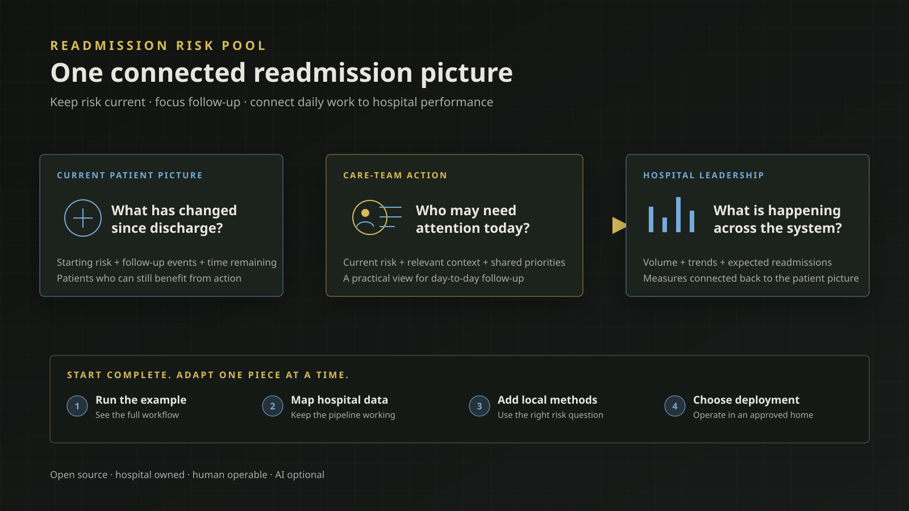

Concept diagramReadmission Risk Pool Platform
An open-source way for hospitals to keep readmission risk current, help care teams focus follow-up, and connect day-to-day work with the larger hospital picture.
Can a hospital manage readmissions from one current, connected view—supporting daily follow-up and leadership decisions without surrendering its data, methods, or workflow to a fixed vendor tool?
The public v0.1.0 Hospital Implementation can be installed and run with fictional data to exercise the full path from source inputs and risk updates to history, analytical products, and a web application.
The first public Platform and Hospital Implementation releases provide a working reference application, a hospital-owned customization path, and generation of a validated repository prepared for Posit Connect Cloud setup.
Add and validate a container-based deployment path so hospitals can more directly move generated application artifacts into their own approved environments.
Known limits: The included data and reference risk method are fictional and nonclinical. Real hospital use still requires local data mapping, model validation, privacy and security review, deployment approval, workflow design, and clinical governance.